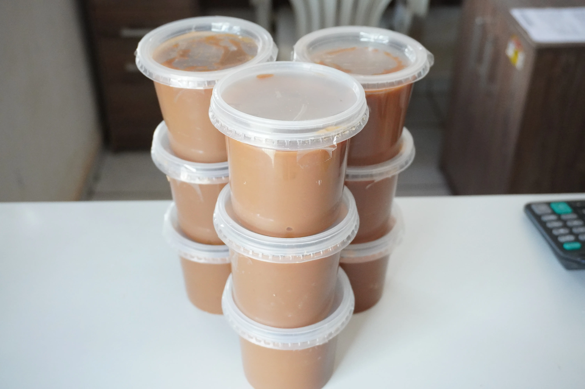
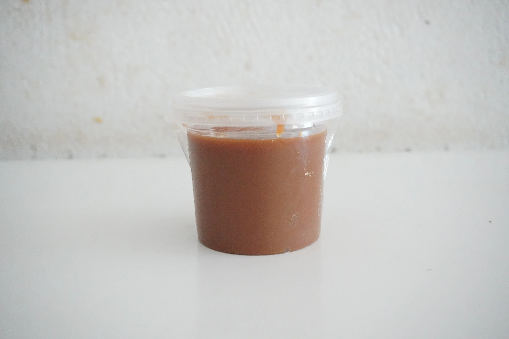
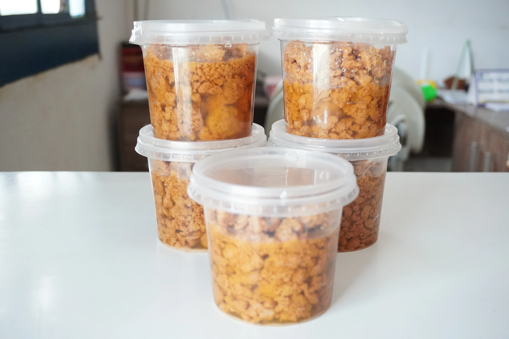
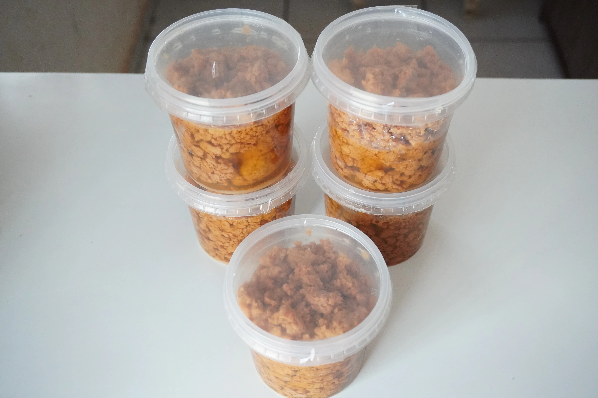

Doces Caseiros da Fazenda
Feitos em tacho — Receita de família
Escolha a Variação:
Retire na loja: R. Bom Jardim, 379 — Centro, Cáceres.
Doces Caseiros da Fazenda: Quatro Variações, Uma Só Tradição de Tacho
O doce de leite industrializado que ocupa prateleiras de supermercado é produzido com leite em pó reconstituído, amido modificado para dar corpo artificial e conservantes que estendem o prazo de validade às custas do sabor. Os nossos doces partem de um lugar completamente diferente: leite integral fresco tirado na própria fazenda, com toda a gordura e os sólidos naturais que darão a cada variação sua textura e sabor incomparáveis. Do mesmo tacho artesanal saem quatro opções pensadas para diferentes paladares — o Tradicional Cremoso, o Com Coco, o Tablete e o lendário Doce Cachorrada pantaneiro —, cada uma com personalidade própria e a mesma base honesta de sempre.
Tradicional Cremoso: A Base de Tudo
O Tradicional Cremoso é o ponto de partida e o coração da linha. Leite fresco, açúcar cristal e uma pitada de bicarbonato vão ao fogo baixo num tacho de cobre, onde a mistura passa por horas de meximento constante e paciente. É durante esse cozimento lento que a reação de Maillard acontece — a transformação química que cria o sabor complexo, levemente tostado e profundo que nenhum aditivo consegue reproduzir. O ponto é uma questão de experiência e de olho: saber a exata consistência cremosa que permite que o doce escorra da colher com elegância, sem ralear, é um conhecimento passado oralmente de mãe para filha ao longo de gerações. Perfeito passado no pão, como recheio de bolo ou direto na colher.
Doce Cachorrada: O Orgulho do Pantanal
O Doce Cachorrada é o mais tradicional e o mais trabalhoso dos quatro. A origem do nome remonta às cozinhas das fazendas pantaneiras, onde o leite ficava "apanhando" no tacho por horas a fio — uma referência bem-humorada ao processo exaustivo de mexer sem parar sobre fogo de lenha. O resultado desse cozimento extremamente prolongado em tacho de cobre é uma massa de cor marrom-escura intensa, quase negra por cima, com um sabor de caramelo profundíssimo e um dulçor que não enjoa. A textura é densa e firme o suficiente para ser cortada em pedaços, mas se derrete na boca com uma untuosidade que nenhum doce industrial chega perto de imitar. É patrimônio da doçaria mato-grossense — e é feito aqui do mesmo jeito que sempre foi, sem atalhos.